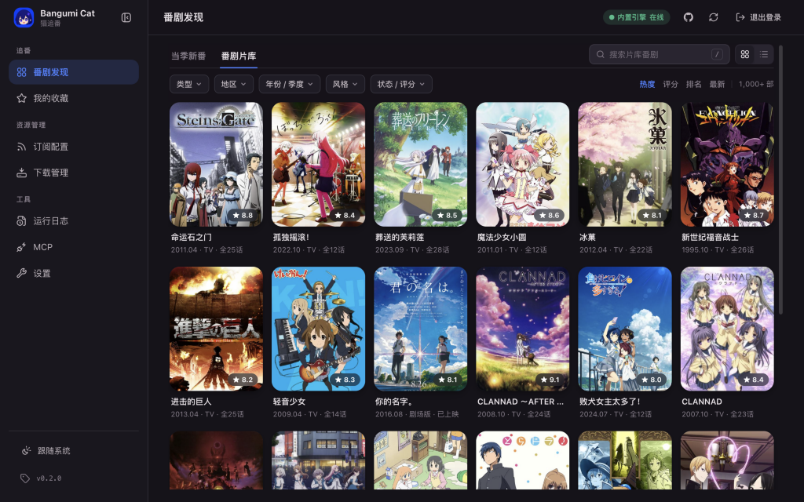

猫追番（Bangumi Cat）内置纯 Go BT / HTTP 下载引擎与 Google Drive 分块归档，无需安装 aria2。电脑端自动追更并释放本地空间，手机客户端与浏览器按需流式播放。
支持 macOS · Windows · Linux 桌面端、Android 客户端、iOS / Web PWA 与 Docker 服务端
内置纯 Go HTTP 多连接与 BitTorrent 引擎，无需安装 aria2。支持按字幕组、1080p 清晰度自动择优下载，未下完也能直接边下边播。
下载完成后以 8 MiB 分块断点上传至 Google Drive，严格核对文件大小与 MD5 后按需清理本地副本，小硬盘电脑也能囤完整番剧库。
Android 客户端与手机网页支持局域网高速直连 + Cloudflare Tunnel 自动切换，按 HTTP Range 直接流式播放本地与网盘视频。

统一的极简控制台：当季排期与全库多维索引无缝切换，桌面端、网页端与手机客户端共享一致体验
围绕「电脑挂机收番存网盘，手机躺平直接看」打磨每一个环节，省去拼凑五六个工具的折腾成本。
不仅能看当季每日更新，还支持按类型（TV/剧场版/OVA/WEB）、地区、年份季度、26 种题材风格与评分筛选历年全库番剧。
纯 Go 实现多段断点续传、DHT / PeX / WebSeed 与滑动窗口顺序调度，拖动进度条优先拉取对应分片，真正做到零依赖边下边播。
内置 OAuth 配置向导、自动重试上传、MD5 完整性保护，并提供 Google Drive 优选 IP 扫描与独立 TLS SNI 控制以提升云端读取速度。
700 KB 级轻量 Android 客户端支持局域网/公网穿透双地址自动择优、全屏自动横屏、屏幕常亮与 30 天免重复登录；iOS 支持 PWA 主屏运行。
电脑桌面端无需重启即可一键开放私有局域网/Tailscale 访问，同时内置 Cloudflare Tunnel 快速穿透与命名隧道托管。
内置账号密码安全会话管理（PBKDF2-SHA256）与标准 MCP 服务，可一键接入 Diana 或 Claude，用自然语言查新番、管订阅、看下载进度。
普通电脑用户直接下载桌面安装包双击打开即可；服务器或 NAS 用户可用一条命令完成校验安装。
# 1. 前往「下载客户端」获取对应系统的桌面安装包并打开： # - macOS: bgmcat-desktop-0.2.0-mac-arm64.dmg (Apple Silicon) / mac-x64.dmg # - Windows: bgmcat-desktop-0.2.0-win-x64.exe # - Linux: bgmcat-desktop-0.2.0-linux-x64.AppImage / .deb # # 2. 在桌面端「设置 → 云盘归档」连接 Google Drive，在「设置 → 远程与安全」开启局域网或穿透； # 3. 手机安装 bgmcat-android-0.2.0-universal.apk（或用浏览器打开地址）即可随时点播！
git clone https://github.com/SuInk/bgmcat.git cd bgmcat docker compose up -d --build docker compose logs bgmcat
sh scripts/build.sh ./bin/bgmcat --listen 0.0.0.0:3001